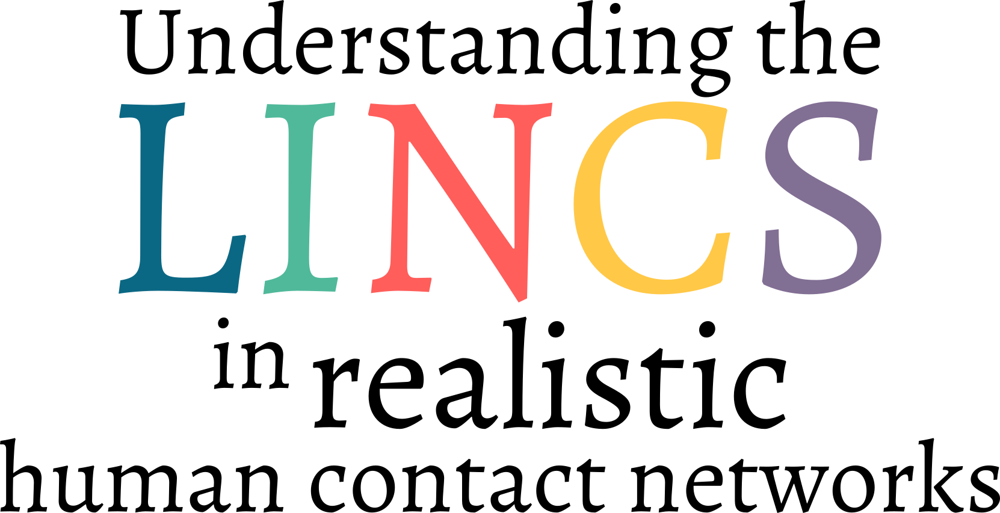
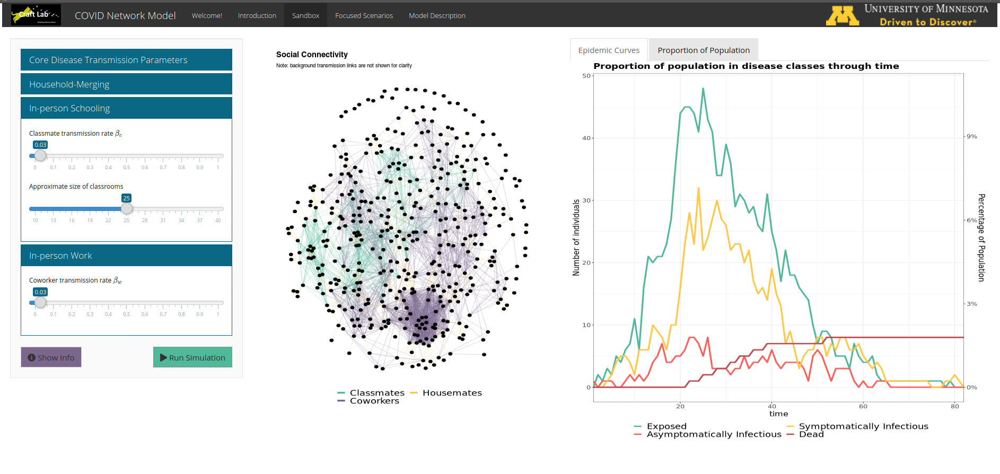
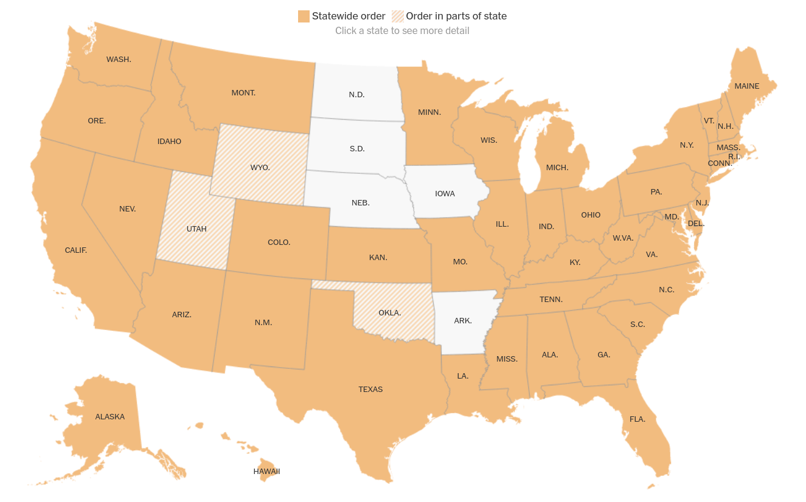

Matt Michalska-Smith
Marie Gilbertson

Lauren White
Meggan Craft

Network
Disease Model
Network
- What is contact?
- What makes a contact network realistic?
- Why is this complexity justified?
- Online Application
- Home/Family
- School
- Work
- Religious institutions
- Hospitals
- Nuring homes
Disease Model
What does this look like in a single simulation?
